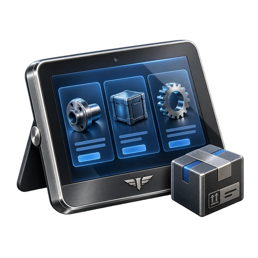
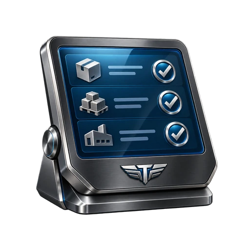

Disponible
Android · 1.1.1+11
Tenkai Distribution Host
Centro del proveedor para coordinar catálogo, colaboradores, rutas, cargas y cuentas.
Distribution coordinado
Tres aplicaciones para una empresa con catálogo central, rutas autorizadas y supervisión delegada.
Arquitectura
Android · 1.1.1+11
Centro del proveedor para coordinar catálogo, colaboradores, rutas, cargas y cuentas.

DisponibleAndroid · 1.1.1+11
Aplicación de ruta para el vendedor autorizado por un Host.

DisponibleAndroid · 1.1.1+11
Cuenta delegada para supervisar la operación sin compartir credenciales del propietario.
Diferencia
Personal administra una ruta autónoma. El modelo coordinado separa dirección, venta y supervisión para conservar control y trazabilidad.
Catálogo, precios, usuarios, rutas, cargas, folios, cuentas y permisos.
Carga asignada, clientes, ventas, devoluciones, cobros y cierre.
Supervisión y tareas específicas sin borrar evidencia ni compartir PIN del propietario.